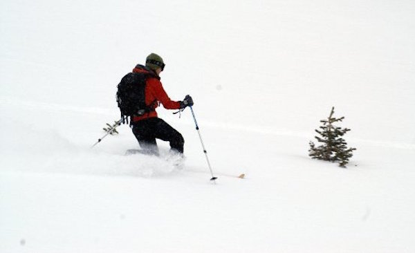
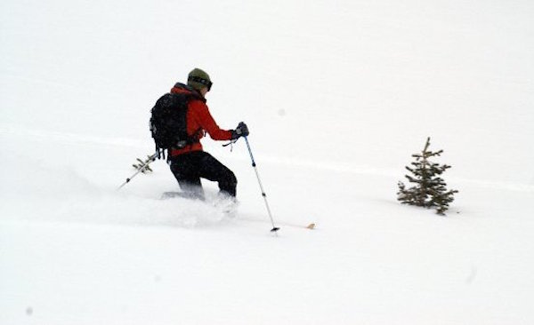
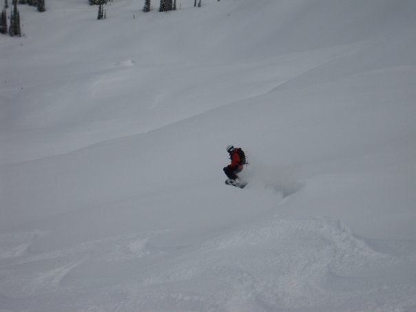
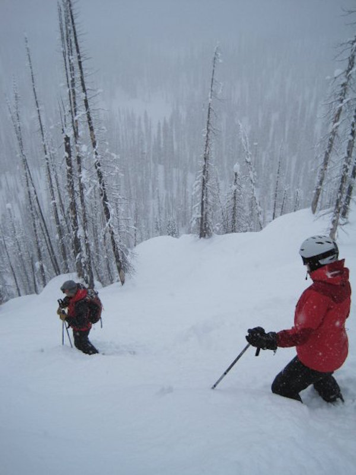

If I told you that I spent the first 18 years of my life in Florida, you would probably be surprised that a love of snowsports pulses through my veins. While I grew up thousands of miles from the west, I inherited a love of travel from my parents, who took my sister and me on a ski vacation almost every year. On my first ski trip, at age 3, I told my mother that I wanted to be a ski instructor when I grew up.
I moved to Colorado the day I turned eighteen, and spent most weekends in the mountains, relieving stress and clearing my head for the next week of engineering classes at Colorado School of Mines. I even spent a semester working full time as a ski and snowboard instructor. Ultimately, my love of problem-solving pulled me back to engineering, but skiing remains a cherished part of my life.
This page showcases some of my favorite pictures and videos from days in the mountains. Enjoy!
 

Monashee Powdercats, British Columbia
A few years ago, I was lucky enough to spend four days skiing bottomless powder from a remote lodge in British Columbia. From the nearest airport in the town of Kelowna, getting to the Monashee lodge involves a 2-hour drive to a forest service road, a 45-minute drive down that road, and a 45-minute showcat ride. This place is remote! Combine the spectacular setting with 20,000 skiable acres of terrain, 700 inches of annual snowfall, a snowcat as transportation, and only 24 people skiing, and you get heaven.
 Jackson Hole, WY
It was an amazing weekend in Jackson with great friends.
Random Shots
Shots from fun days at various places.